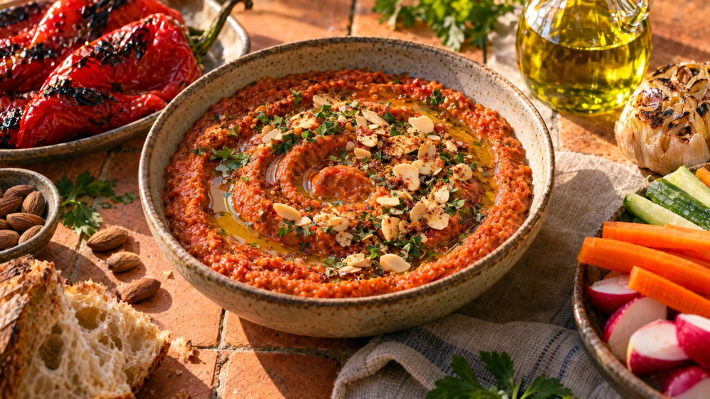

RESTFEST · RECEPTSåser & röror
Rökig romesco på paprika, gammalt bröd och mandel
Två paprikor som börjat bli skrynkliga, en skiva gammalt bröd och en näve mandlar rostas och mixas med vitlök, rökt paprikapulver och vinäger. Det blir en tegelröd, sammetslen röra som toppas med olivolja och rostade mandelspån. Passar till grönsaker, potatis, fisk eller bara bröd.
- Förberedelse
- 10 min
- Tillagning
- 30 min
- Portioner
- ca 3 dl (4–6 portioner)
- Nivå
- Nybörjare
 Det här behöver du
Det här behöver du
Tryck på + vid det du behöver köpa.
Till servering
Gör så här
- Sätt ugnen på 225 grader. Dela paprikorna på längden och ta bort kärnhusen.
- Lägg paprikahalvorna med skalet uppåt på en plåt med bakplåtspapper, tillsammans med vitlöksklyftorna i skal. Rosta i 25–30 minuter, tills paprikaskalet har svarta fläckar och bubblor.
- Lägg paprikorna i en skål och täck med ett lock eller en tallrik i 10 minuter. Dra sedan av skalet, det lossnar lätt. Kläm ut vitlöken ur skalet.
- Rosta mandlarna i en torr stekpanna på medelvärme i 3–4 minuter, tills de doftar.
- Bryt brödet i bitar och stek dem i 1 msk olivolja i samma panna i 2–3 minuter, tills de är gyllene.
- Mixa paprika, vitlök, mandlar, bröd, tomatpuré, rökt paprika, vinäger, salt och chili i en matberedare eller med stavmixer. Tillsätt resten av oljan medan du mixar.
- Mixa tills rörans konsistens är jämn men med lite struktur kvar. Smaka av med salt och vinäger.
Dekoration och servering
- Bred ut romescon i en grund skål och gör en virvel med baksidan av en sked.
- Ringla olivolja i virveln och strö över mandelspån, persilja och ett damm av rökt paprikapulver.
- Servera som dipp till grönsaksstavar och bröd, eller till grillad fisk, kyckling och rostad potatis.
- Romescon håller i ca 5 dagar i kylen och blir godare dagen efter.
Mått och ugnstemperaturer
Måtten är svenska (dl, msk, tsk, krm). Ugnstemperaturerna gäller vanlig ugn med över- och undervärme; med varmluft, sänk med 20 grader.